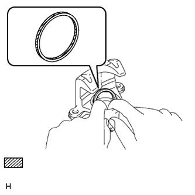
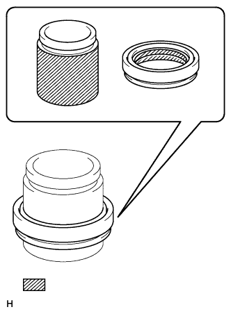
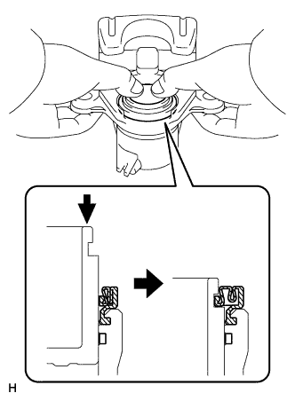

REAR BRAKE > REASSEMBLY |
| 1. INSTALL PISTON SEAL |
|  |
Apply a light coat of lithium soap base glycol grease to a new piston seal.
 | Lithium soap base glycol grease |
Install the piston seal to the rear disc brake cylinder.
| 2. INSTALL CYLINDER BOOT |
|  |
Apply a light coat of lithium soap base glycol grease to the entire inner circumference of a new cylinder boot.
| Lithium soap base glycol grease |
Apply a light coat of lithium soap base glycol grease to the entire outer circumference of the rear disc brake piston where it contacts the rear disc brake cylinder.
Install the cylinder boot to the rear disc brake piston.
Install the rear disc brake piston to the rear disc brake cylinder.
| 3. INSTALL REAR DISC BRAKE PISTON |
Install the cylinder boot to the rear disc brake cylinder.
|  |
Push in the rear disc brake piston by hand and install the cylinder boot into the groove of the rear disc brake piston.
| 4. TEMPORARILY INSTALL REAR DISC BRAKE BLEEDER PLUG |
Temporarily install the bleeder plug to the rear disc brake cylinder.
| 5. INSTALL REAR DISC BRAKE BLEEDER PLUG CAP |